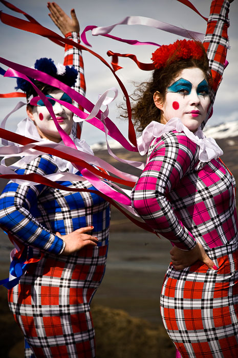
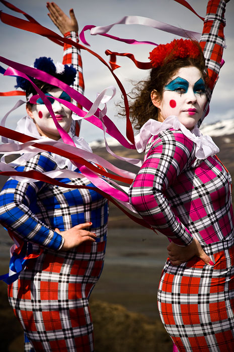

Episode 13: Love the Earth Part I and II
Episode 13 of The Weird Girls Project took place in volcano hit Þórsmörk and surrounding areas. The video media from the performance produce a piece for Imogen Heap's Love the Earth score. Imogen gave Kitty two musical pieces and so the Episode is in two parts.
Kitty had wanted to produce a piece in Þórsmörk for several years but the costs of specialised transport made it unattainable. Following a fundraiser through the Kickstarter.com website the Project gained sponsorship from both Hostelling International Iceland and Reykjavík Excursions to enable the location to be possible. Pegasus also part sponsored the equipment which enabled Kitty to use the best available film equipment.
This episode was gifted with perfect weather and Kitty took the women on a truly grueling day's filming. The experience was very emotional for all the women involved and it was referred to as a magical moment in their lives.
Part I was filmed around the stunning waterfall Seljalandsfoss and was incredibly difficult to film both from an equipment perspective and due to the freezing glacial water the women were soaked in. This piece is Kitty's personal favourite so far.
Part II took place around Húsadalur and follows the women drawing energy from water worship as they follow the river to its source and rebirth into strong and free spirits.
- Producer, Concept and Artistic Direction: Kitty Von-Sometime
- Director of Photography: Hrafn Garðasson
- Editor: Part I - Logi Hilmarsson, Part II - Helgi Jóhannsson
- Official Photographer: Hörður Ellert Ólafsson
- Camera Assistants: Antón Smári, Jokull Hauksson and Viktor Davið
- Behind the Scenes Photographer: Pall Ívarsson
- Post Production: Michael Todd
- Costumes: María Nielsen, Helga Jóakimsdóttir, Elísabet Maren Guðjónsdóttir and Björg Gunnarsdóttir
- Head Runner: Fríða Einarsdóttir
- Runner and Behind the Scenes filming: Manny Santiago
- Make up: Neníta Aguilar, Theordóra Torfadóttir and Arna Sigurlaug Ragnarsdóttir
- Co- Producers: Linda Ward and Brian Haines
- Official Music: Peace and Flight by Imogen Heap
- 6th and 7th May 2011
Part 1
Part 2
 
